System design document (SDD) for the Plingnote project
1.2 Definitions, acronyms and abbreviations
2 Proposed system architecture
2.2.4 Decomposition into subsystems
2.2.5 - Layering (Layering (anpassas efter indelning, tex MVC))
2.4 Persistent data management
2.5 Access control and security
Version: 0.6
Date: 2012-10-22
Author: Barnabas Sapan, Julia Gustafsson, Magnus Huttu, David Grankvist, Linus Karlsson
This version overrides all previous versions.
Plingnote is an android application where you can create and view notes on a global map and in a simple list, ordered by date.
N/A
By using fragments and a modular structure the system design will be more useful for further development.
The client will show note markers on a map or in a list. The markers will be fetched from a local content provider (SQLite database) that contains information about each note. This information is stored locally on the phone.
Plingnote will include a SQLite database. In order for the application to work properly, the user needs to be able to save various information about each note. This information consists of a title, a text, longitude and latitude of a location on the map, a path of an image, a date and time of which an alarm will trigger, the category and finally, an address close to the given location. All data will be stored in separate fields. Therefore, each row in the database will represent a note in the application. To tell rows with similar information apart, each row in the database has a hidden field with the ID of the corresponding row.
The SQLite database can be accessed using the DatabaseHandler class. This class is designed to handle all basic SQLite operations such as saving, retrieving and updating existing data. This class will also create the database if it doesn’t exist.
To simplify data retrieval there are two classes, Note and Location, representing a note and its location on the map. The Location class has instance variables with data from the longitude and latitude fields and the Note class has instance variables with all the other fields as well as a Location object. Instances of these classes are acquired by specifying a row id.
The application is decomposed into the following modules,
The android application communicate with a local content provider (SQLite Database).
N/A
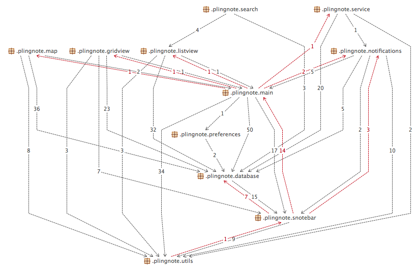
Our applications map view response/loading time is heavily depending on the Internet connection currently active. If the user isn’t connected to internet, the map doesn’t load. The application will keep running as ordinary. It will still be possible to add new notes in the list or grid view.
Cached data will be stored in an SQLite database on the phone. As SQLite is a lightweight relational database, data insertion and retrieval will operate quickly.
No login needed for using the application. No backup on database and no login to access the database.
The application is started by installing the apk file. You must use an Android device or emulator. The application will be closed, but running in background, if stepping out by the devices home button or back button. If the internet connection is down we will show a cached version of the part of the map that was opened last time and you can use the application as normal apart from you only see a small part of the map. If the user take away a photo associated with a note, we will show the category image on the map. The category images is stored in our application. If no category image is choiced we will show a default image(stored in our application).
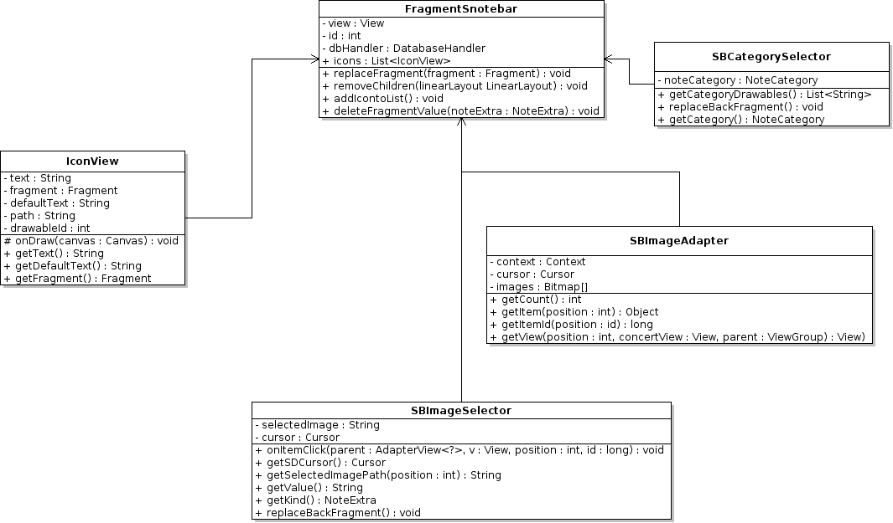
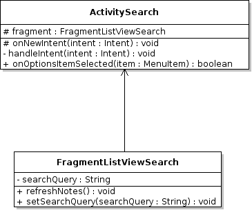
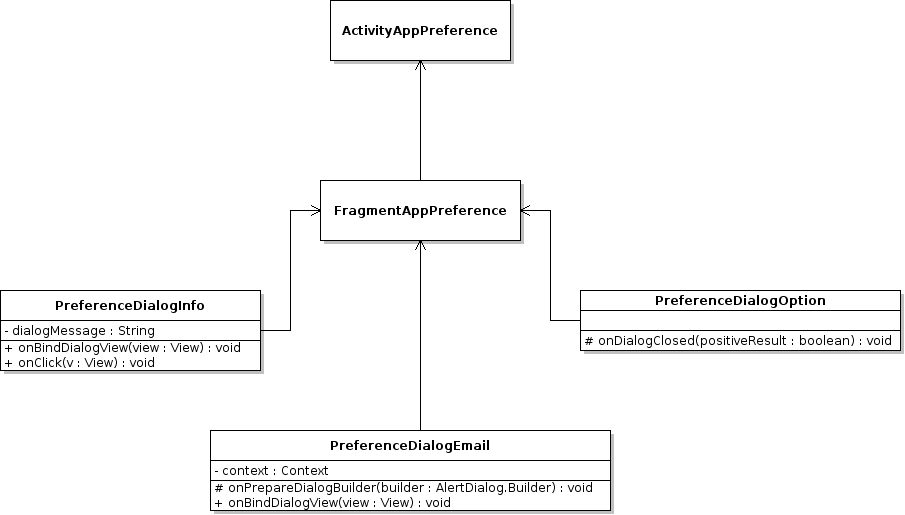
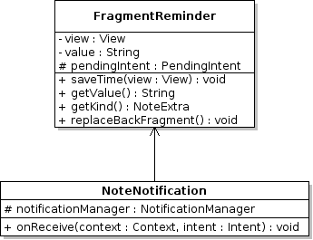
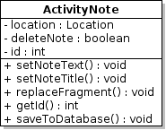
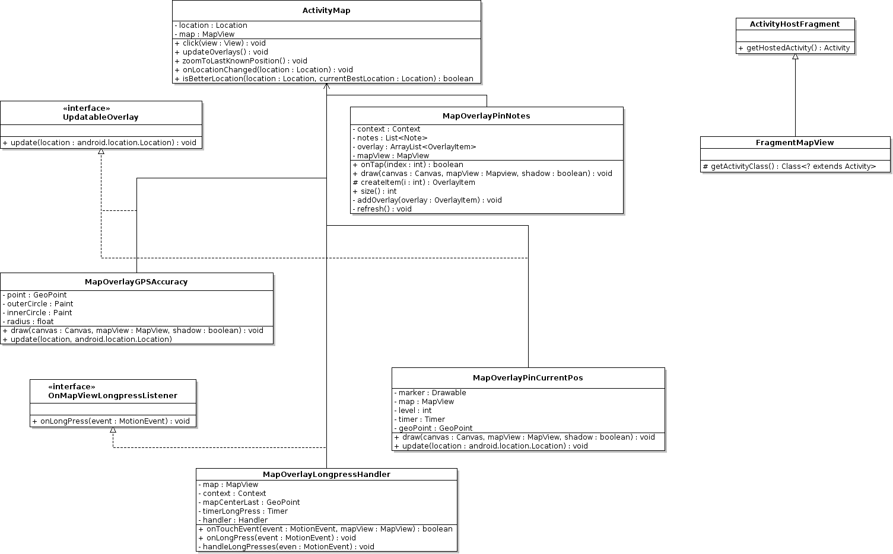
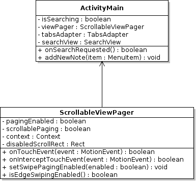
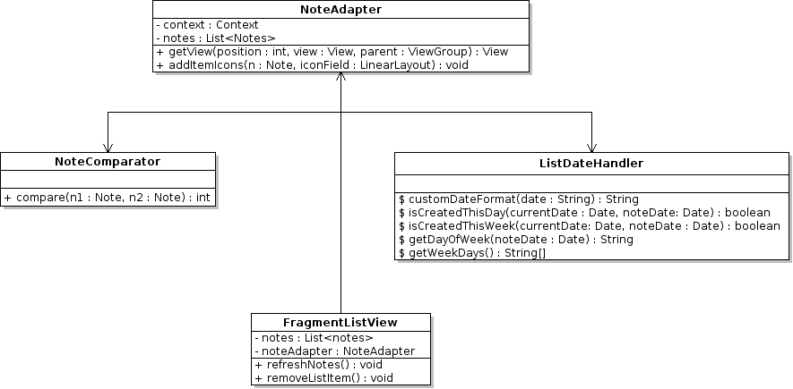
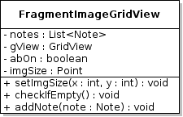
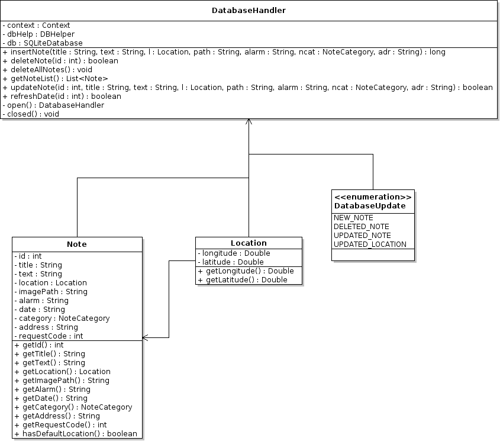